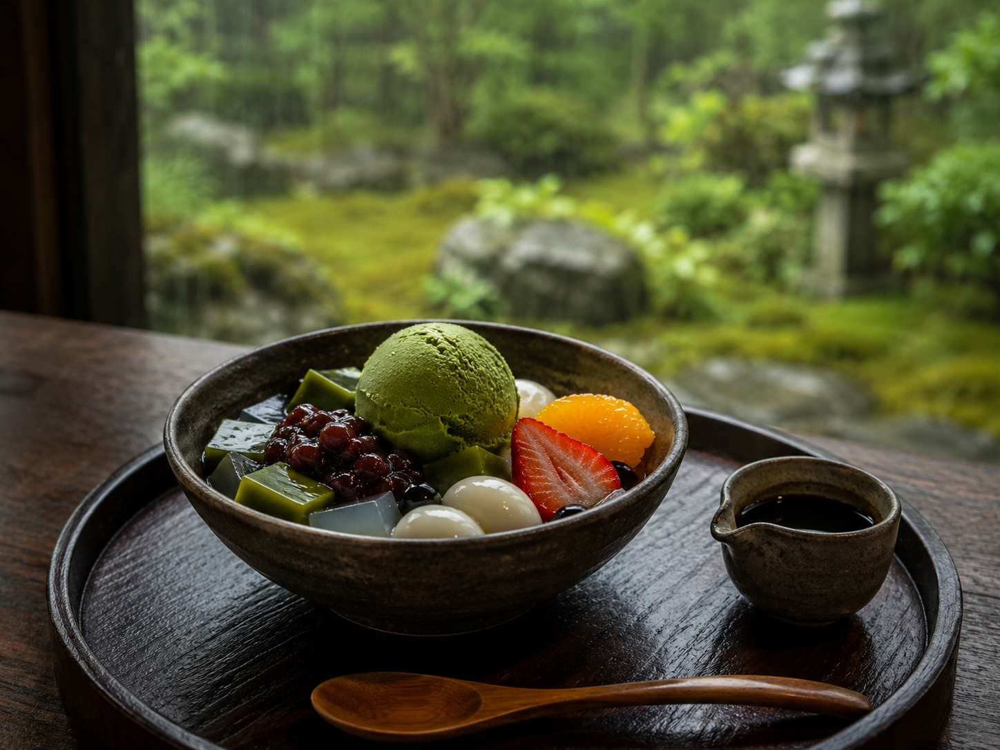
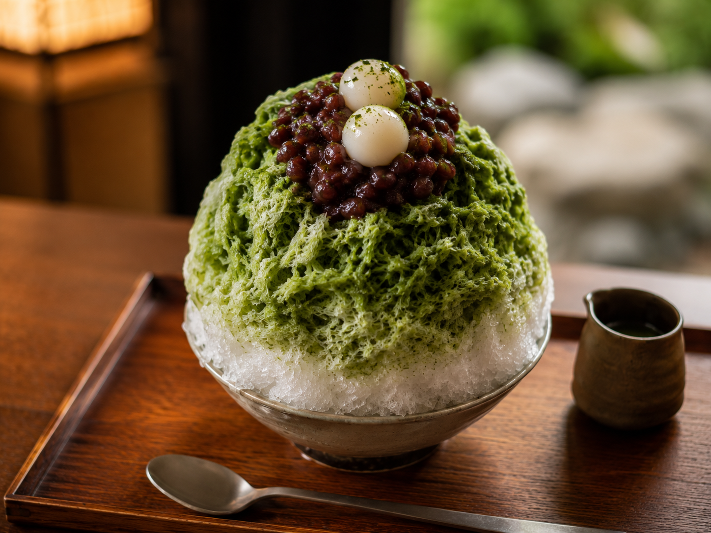
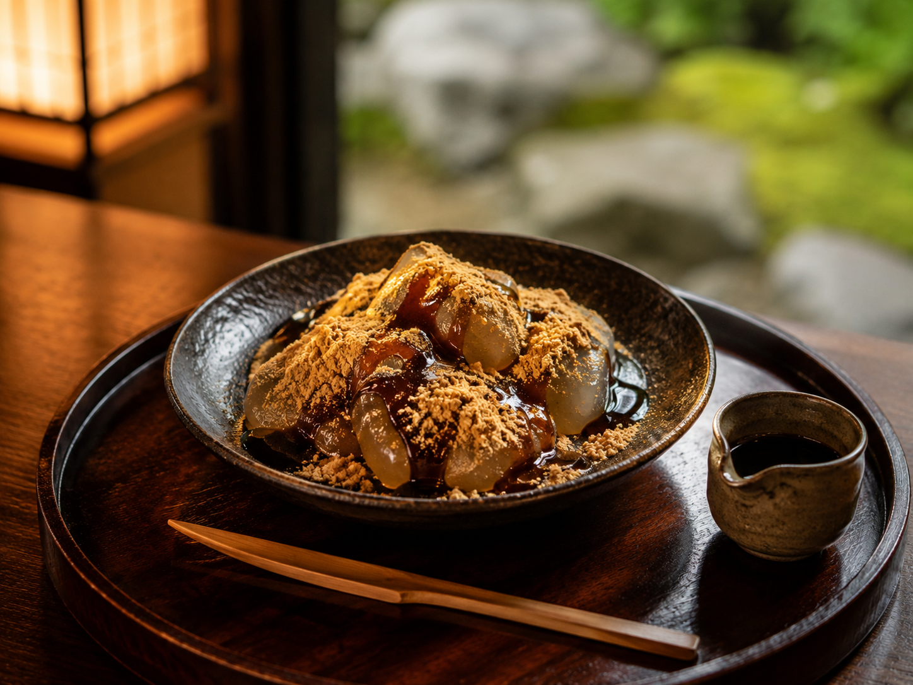
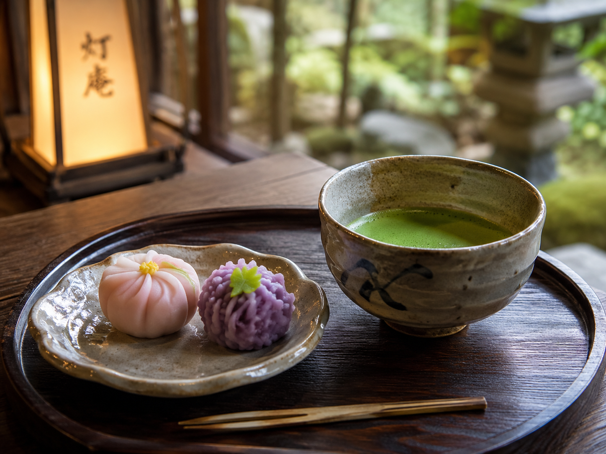

抹茶あんみつ
抹茶寒天、白玉、粒あん、季節の果実を合わせた、灯庵を代表する一品。
庭の緑と季節の甘味を味わう、 静かな古民家茶房。


山あいの静かな場所に佇む、庭付きの古民家茶房。
苔むす庭、やわらかな緑、古い木のぬくもり。
灯庵では、そんな静かな景色の中で、抹茶や季節の甘味をゆっくり味わっていただけます。
観光の途中に立ち寄るひとときにも、静けさを求めて訪れる時間にも寄り添う場所です。
— 古い家に、甘い時間を。
灯庵が誇る、季節と素材を映した四つの甘味。 お茶とともに、静かなひとときを。

抹茶寒天、白玉、粒あん、季節の果実を合わせた、灯庵を代表する一品。

濃い抹茶蜜とやさしい甘みを重ねた、季節限定の人気甘味。

やわらかな口あたりと香ばしさを楽しめる、定番の和甘味。

季節を映した和菓子とともに味わう、静かな一服のための一皿。
灯庵では、甘味だけでなく、四季折々の庭の表情も魅力のひとつです。
苔、石、木々、やわらかな光。
縁側や窓辺から、静かな景色を眺めながら過ごす時間をお楽しみください。

季節ごとに装いを変える、灯庵の甘味。庭の景色とともにお楽しみください。
桜や若葉を感じる、やさしい甘味。
抹茶かき氷や冷たい甘味で涼を楽しむ季節。
栗や芋、香ばしさを味わう甘味の季節。
あたたかな抹茶やぜんざいが似合う季節。